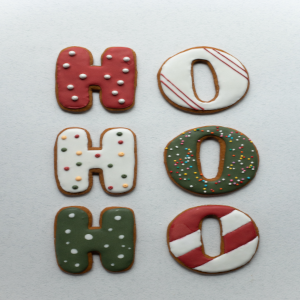

Sempre uma novidade para você.
Aqui o seu natal é mais gostoso.

Personalizamos biscoitos em datas especiais. Descubra o sabor do natal,aquele que mais combina com vc e com as pessoas que vc ama.
Entre em contato pelo nosso whatsapp
(11)9 9999-9999